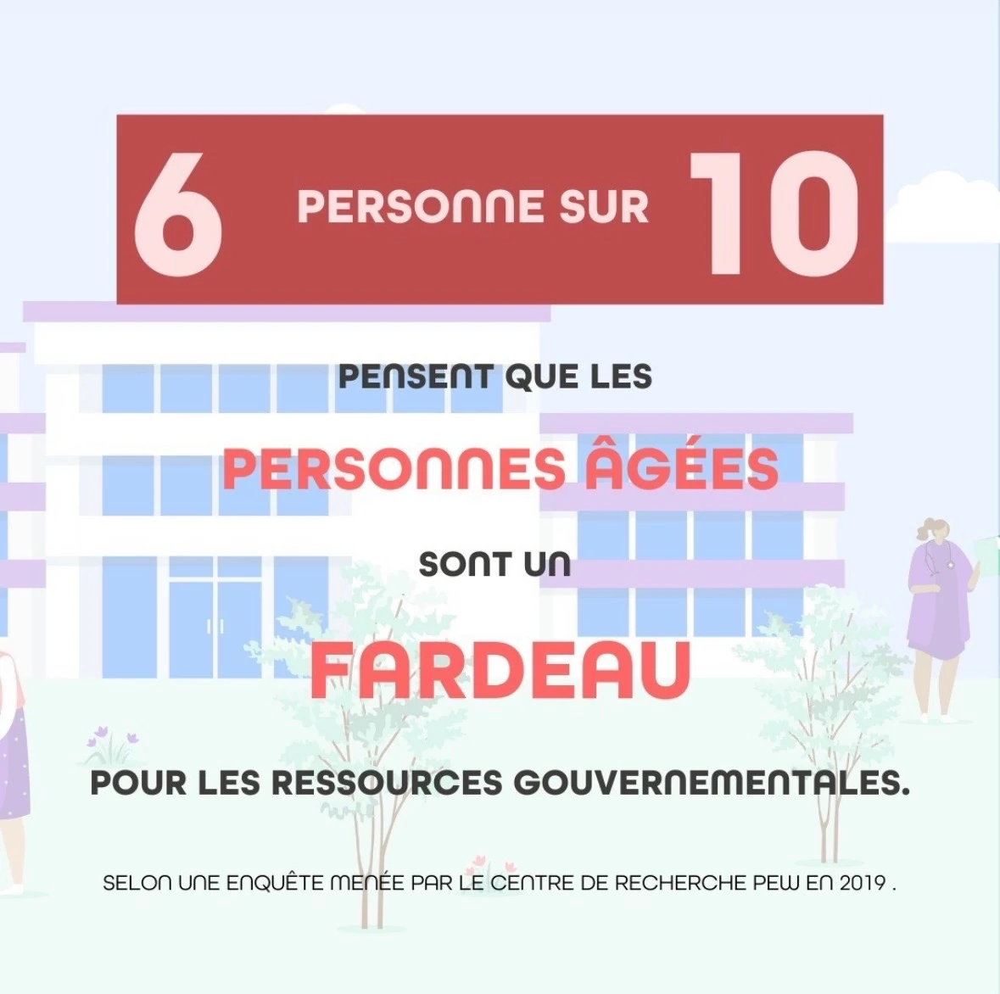
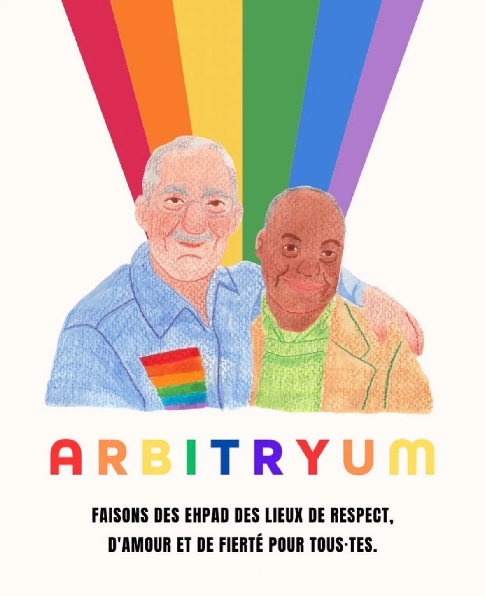
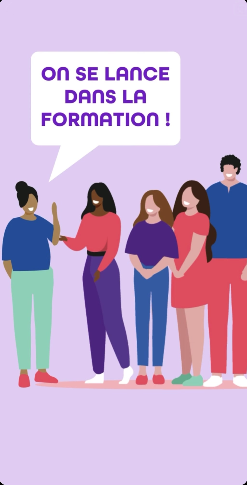
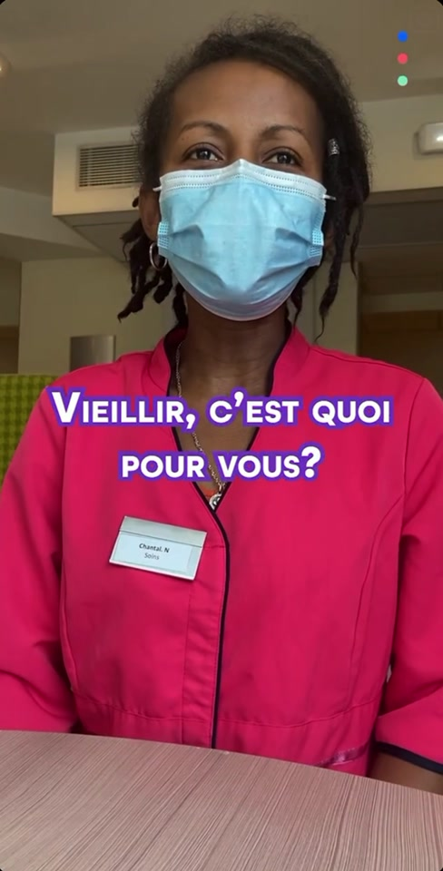
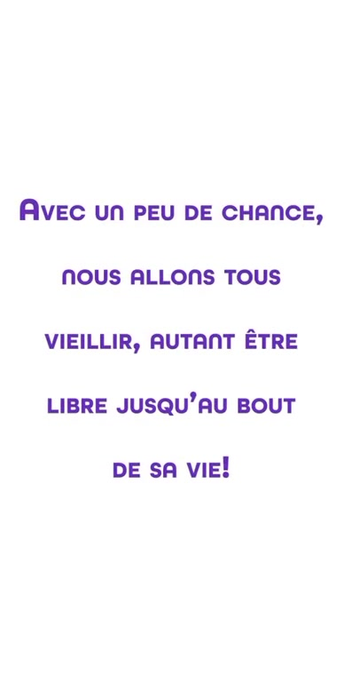

01 / SOCIAL MEDIAARBITRYUM · MAI 2023
L’âgisme en chiffres
Rendre un sujet de société accessible.
Un peu de stratégie, beaucoup de sens.
Et toujours l’envie de faire passer un message.

01 / SOCIAL MEDIARendre un sujet de société accessible.

04 / SOCIAL MEDIAFaire une place à toutes les histoires.

02 / MOTION DESIGNVIDÉODu mouvement pour éveiller la curiosité.

03 / INTERVIEWDonner la parole à celles qui accompagnent.

05 / INTERVIEWDes rencontres avant d’être des contenus.
D’autres projets arrivent très vite.
Une passion à explorer, un regard à partager.
Cheffe d’équipe, prix de l’innovation à l’IUT de Béziers en 2021. À cette période, engagement auprès d’ADEN’S au Maroc.
Une formation tournée vers le développement international et sociétal.